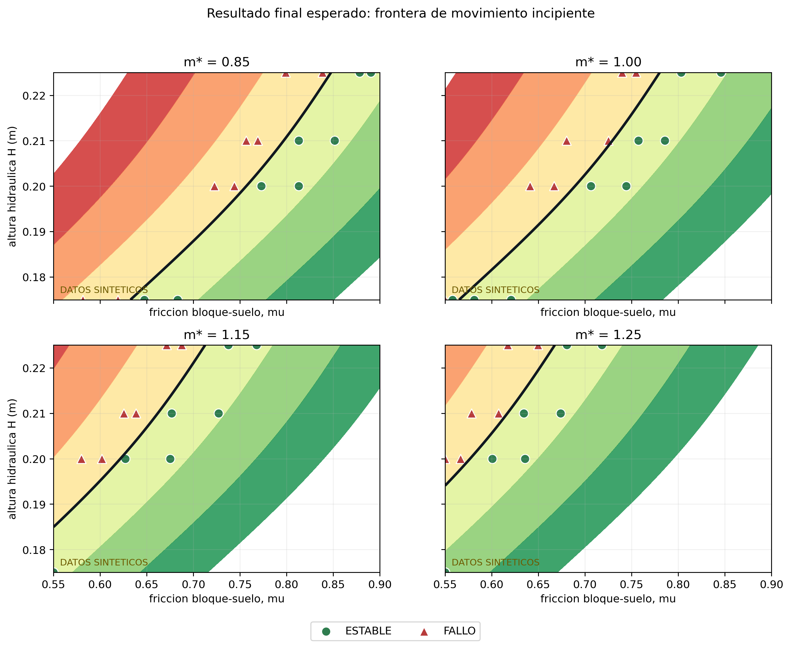
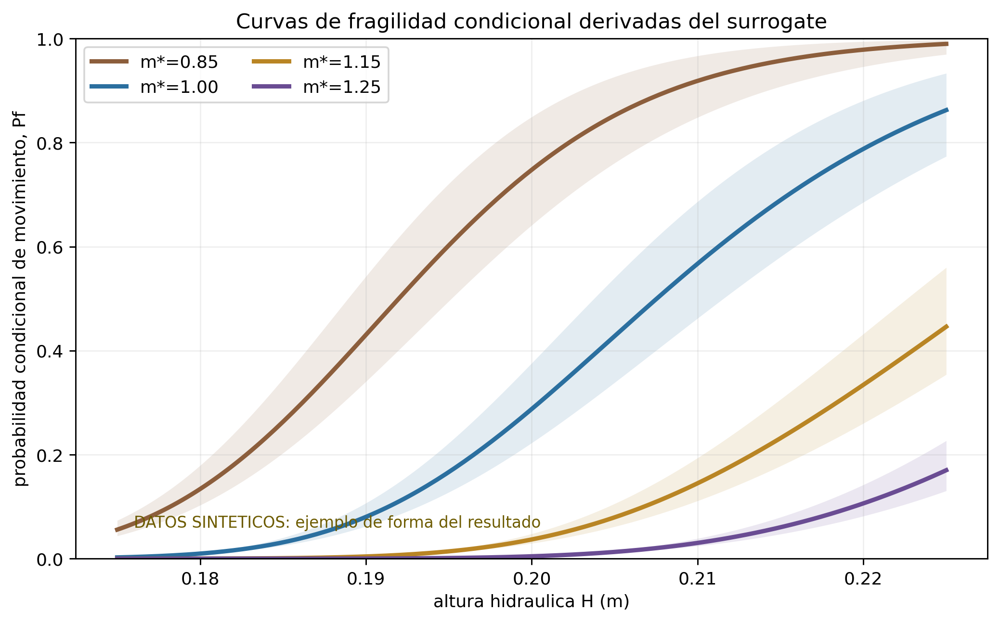
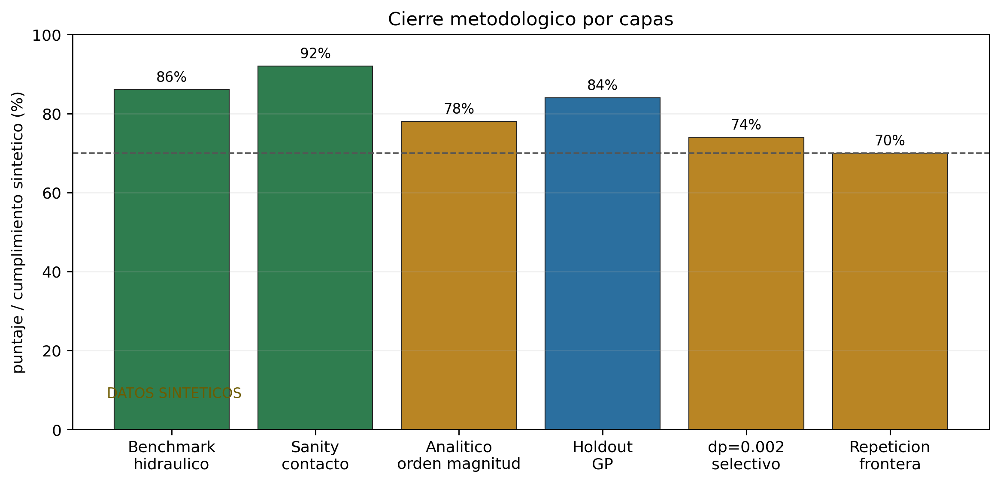

Frontera probabilistica de movimiento incipiente de un bloque costero
Este mock muestra la forma esperada del entregable final: no seria solo una ecuacion ni solo un grafico, sino un paquete corto con estado limite, frontera, fragilidad, validacion y limites de interpretacion.
Importante: las figuras usan datos sinteticos para ensayar presentacion. El formato busca mostrar que recibiria el profesor cuando la campana real este cerrada.
1. Resultado central
El resultado final se reportaria como una superficie de estado limite condicionada a la geometria base, contacto, pendiente y resolucion productiva:
g(H, mu, m*) = 0.05 - Dmax(H, mu, m*) / d_eq
Si g > 0, el bloque queda bajo el umbral operacional de movimiento. Si g < 0, supera el umbral. El GP no reemplaza las simulaciones: interpola el margen y entrega incertidumbre para decidir nuevos casos.
- Variable hidraulica
- H, altura inicial dam-break
- Resistencia
- mu, friccion bloque-suelo
- Masa relativa
- m* = m / m_base
- Salida primaria
- Dmax / d_eq
2. Frontera final

3. Fragilidad condicional

4. Validacion por capas

5. Tabla que podria recibir el profesor
| Salida | Que entrega | Como se interpreta |
|---|---|---|
| Superficie g=0 | Frontera H-mu-m* | Indica combinaciones donde inicia movimiento segun Dmax > 5% d_eq. |
| Curvas Pf(H) | Fragilidad condicional | Probabilidad de movimiento bajo distribuciones asumidas de mu y m*. |
| Holdout GP | Validacion interna | Mide si el surrogate predice casos no usados para entrenar. |
| dp=0.002 selectivo | Sensibilidad de resolucion | Cuantifica cuanto se mueve la frontera cerca del umbral. |
| Comparacion analitica | Coherencia fisica | Verifica orden de magnitud, no reemplaza SPH-Chrono. |
6. Frase final esperada
La contribucion no seria decir "el bloque falla en un mu exacto", sino entregar una frontera condicionada y cuantificada: para una geometria, resolucion y criterio definidos, el movimiento incipiente se describe por una superficie g(H, mu, m*)=0, con incertidumbre del surrogate, sensibilidad de resolucion y verificaciones independientes del pipeline numerico.